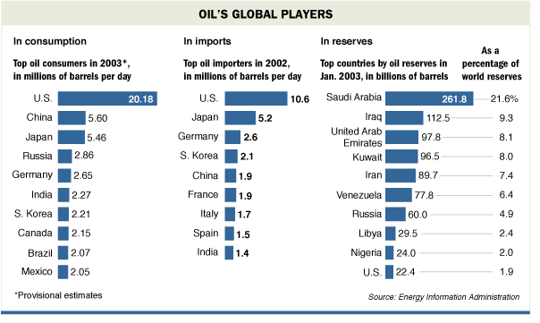

| Much new oil has been found, and the U.S. has become far more efficient in energy use. But none of this disturbs a hard truth: America's economy, the engine of its global pre-eminence, depends on some of the world's most anti-American nations. By 2020, the federal Energy Information Agency expects, the Persian Gulf will account for 54% to 67% of world oil exports, up from around 30% now.
—Wall Street Journal |
